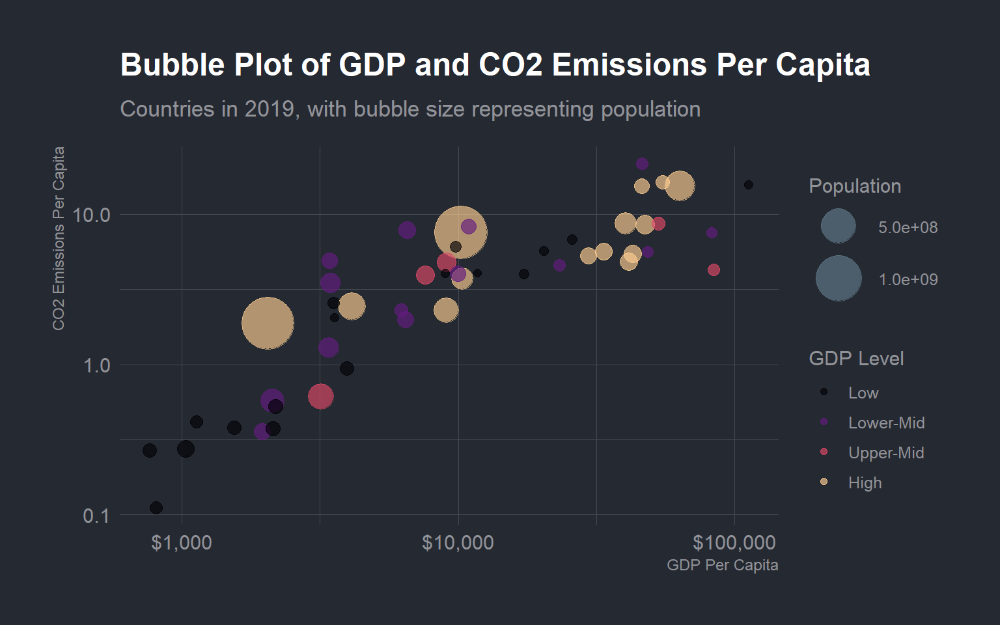

🗑️ Plastic Waste Data This data set was independently gathered by Sarah Sauve to contribute to the global audit that the Break Free from Plastic organization holds each year. Data was collected in St. John, Newfoundland from 2019 to 2020. The data set includes counts of different plastic types (polyester, PVC, polyethylene, etc.), the grand total of all plastic types, number of counting events, and number of volunteers at each cleanup.
🌍 Population & GDP Data Through the World Bank Group’s API, we collected population and GDP data for each country in our plastic waste data set for 2019 and 2020. The World Bank coordinates and compiles data from National Statistics Agencies, Central Banks, and Government Agencies into accessible APIs. Data are gathered via household surveys, digital records, censuses, and other secondary sources.
🏭 CO₂ Emissions Data Our final data set contains country-level CO₂ emissions published by Our World in Data, sourced from the Global Carbon Project and other scientific databases, spanning 1750–2024. We restricted it to 2019–2020 to match our other data. CO₂ estimates are derived by tracking a country’s net fuel consumption (extracted + imported − exported) and multiplying each fuel type by its emission factor to compute total emissions.
What is the relationship between GDP per capita and plastic waste generation across countries in 2019–2020? Did the 2020 pandemic have the same effect on both metrics?
Question 2 — GDP & CO₂ Emissions
What is the relationship between GDP per capita and CO₂ emissions per capita across countries in 2019? How does population size influence this relationship?
Is there a visible trend between countries’ per capita GDP, CO₂ emissions, and population size?
| GDP vs CO₂ Emissions per Capita (2019) | |||
|---|---|---|---|
| Top 10 countries sorted by population | |||
| Country | GDP Per Capita | CO₂ per Capita | Population |
| China | $10,228 | 8 | 1,423,520,357 |
| India | $2,041 | 2 | 1,389,030,307 |
| United States of America | $63,297 | 16 | 337,790,069 |
| Indonesia | $4,107 | 2 | 272,489,381 |
| NIGERIA | $3,190 | 1 | 209,485,637 |
| Brazil | $9,030 | 2 | 207,455,459 |
| Bangladesh | $2,130 | 1 | 164,913,060 |
| Japan | $40,395 | 9 | 126,699,421 |
| Mexico | $10,370 | 4 | 125,762,978 |
| Philippines | $3,401 | 1 | 110,804,685 |
Does there appear to be a relationship between the rank of a country’s GDP per capita and their CO₂ per capita?
| GDP and CO₂ Per-Capita Ranking Comparison | ||||
|---|---|---|---|---|
| Top 10 countries ranked by GDP per capita in 2019 | ||||
| Country |
Per-Capita Measures
|
Global Rankings
|
||
| GDP Per Capita | CO₂ Per Capita | GDP Rank | CO₂ Rank | |
| Luxembourg | $112,666 | 15.72 | 1 | 3 |
| Switzerland | $84,100 | 4.29 | 2 | 24 |
| Ireland | $82,540 | 7.54 | 3 | 11 |
| United States of America | $63,297 | 15.50 | 4 | 4 |
| Australia | $54,874 | 16.28 | 5 | 2 |
| Netherlands | $52,967 | 8.71 | 6 | 6 |
| Hong Kong | $48,502 | 5.60 | 7 | 17 |
| Germany | $47,390 | 8.48 | 8 | 8 |
| United Arab Emirates | $46,271 | 21.76 | 9 | 1 |
| Canada | $46,151 | 15.32 | 10 | 5 |
CO₂ and GDP rank appear to move together; countries with the highest GDP per capita tend to also rank highly in CO₂ emissions. This aligns with the positive relationship found in the regression model.


#Mystery Country???